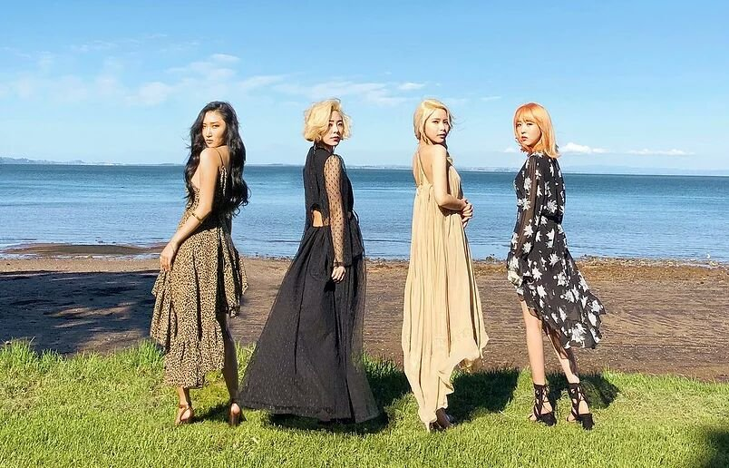
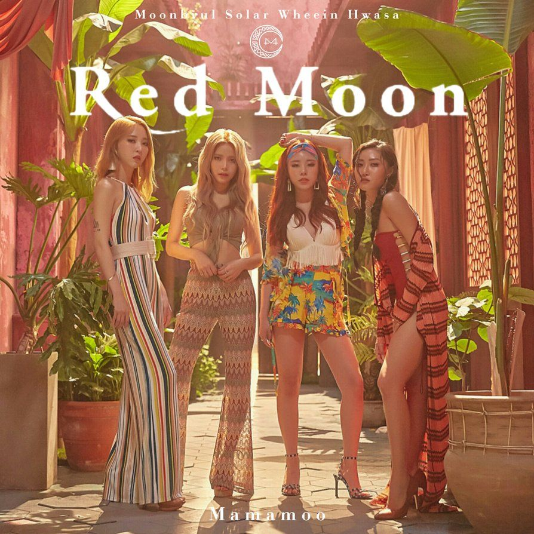
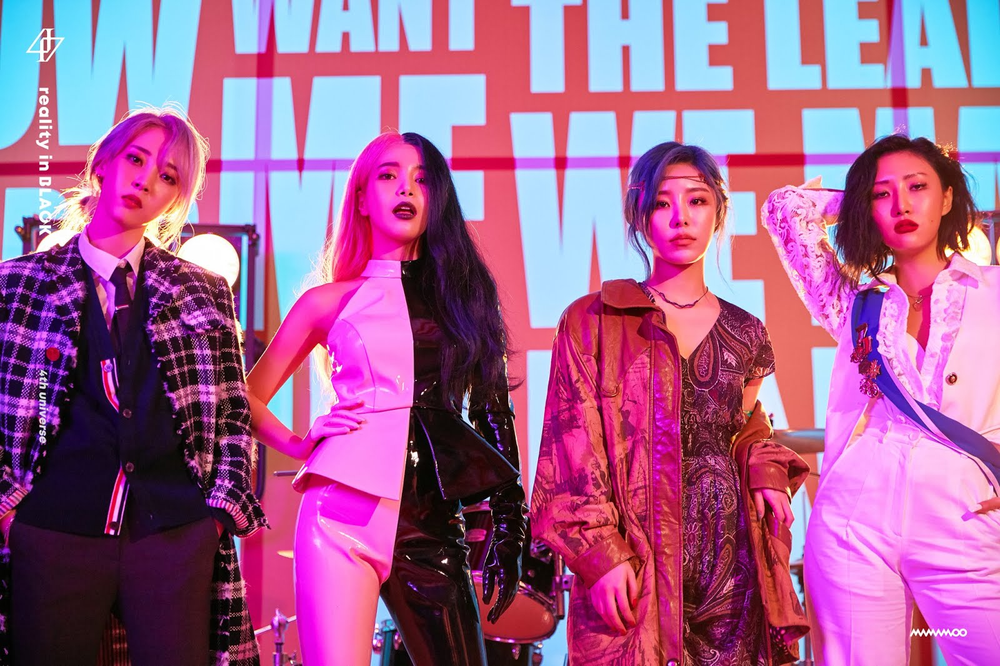

ALBUMNES DE MAMAMOO
| ALBUM | INFORMACION DEL ALBUM | imagen |
|---|
| PURPLE
| El 22 de junio de 2017,MAMAMOO hizo su regreso con su quinto mini-album "Purple" y el video musical para su cancion principal "Yes I Am", su nueva canciòn tiene un ritmo pop dance que expresa la confianza de una mujer en si misma. A una hora de su lanzamiento,"Yes I Am" consiguio el puesto nùmero 1 en las listas de chart surcoreano.
| |
|---|
| YELLOW FLOWER
| EL 7 de marzo de 2018 a las 6 PM hora Coreana, lanzaron su sexto mini-album "Yellow Flower", el tema principal fue "Starry Night" que tiene elementos de electro house junto a un sonido de guitarra. El bello paisaje que apreciamos en el video en el video musical fue grabado en Nueva Zelanda.
|  |
|---|
| RED MOON
| El 16 de julio del mismo año, lanzaron su septimo mini-album "Red Moon", su tema principal es "Egotistic", es una pista de genero de reggeaton con un memorable riff latino de guitarra. La letra expresa a otra persona importante "Siempre pienso en ti, pero tu solo piensas en ti"
|  |
|---|
| Reality in Black
| El 14 de noviembre de 2019, lanzaron su Album completo "Reality in Black". La cancion "HIP" fue co-escrita por Hwasa, la cancion expresa que debes amarte y valorarte por lo que eres sin importar por lo que dicen los demas.
|  |
|---|